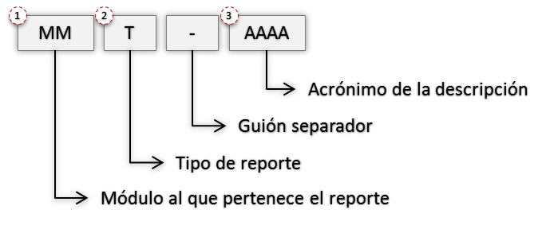

¿Qué es AM?
Este primer capítulo contiene información básica para la comprensión y el uso de AM.
Se plantea una visión general sobre la interfaz de usuario y sobre los elementos que aparecen en pantalla a manera de convenciones generales.
Se aprende a elegir e interpretar los comandos y a seleccionar las opciones de los menús y ventana Submenú, para ejecutar las funciones propias del programa.
En este capítulo también se da un vistazo a la organización y funciones de AM, al igual que un derrotero general sobre su uso e implementación.
Un vistazo a AM
Esta sección ayuda a entender el programa AM (Administrador de Mantenimiento) y a implementarlo para lograr la satisfacción de las necesidades de administración del mantenimiento de los activos en su empresa.
Al analizar la ventana principal se aprecia cómo el sistema está conformado por las siguientes funciones, que componen el menú principal.
Infraestructura [IE]
Función que administra el grupo de datos básicos, parametrizables, de mantenimiento de la empresa.
| Centros de Costo | Centros Responsables | Oficios | Terceros | Responsables |
| Ubicaciones Físicas | Contratos | Tipos de Trabajo | Tipos de Mantenimiento | Tipos de Actividad |
| Almacenes | Unidades de Medida | Monedas | Contadores | Características |
| Características Biomédicas | Riesgos | Magnitudes | Otros Conceptos de Costo | Causas de OT Pendiente |
| Causas de Cierre de OT | Acciones Técnicas | Causas de Falla | Efectos de Falla | Conceptos de Kárdex |
| Operaciones | Referencias | Tipos de Régimen | Estados |
Un grupo de estas tablas, se encuentra preconfigurado, y puede ajustarse según las necesidades y requerimientos de la empresa. Las restantes describen en detalle la cultura técnica organizacional de mantenimiento.
Activos [AC]
Función central del sistema para la definición de los Activos en general, objetos de mantenimiento, equipos, maquinaria, automotores, activos de Servicios, recreativos, activos de tecnología, informática e infraestructura física, más todos los institucionales, hospitalarios u hoteleros.
Almacén [AL]
Es la funcion encargada del registro y control de materiales y repuestos de almacén, se registran por cada ítem su ficha técnica y parámetros de inventario. También se describen las distintas referencias de ese Material o Repuesto, de acuerdo con sus diferentes proveedores.
Kárdex de Repuestos [KX]
A través del Kárdex se realiza el registro de todo movimiento de entrada, ajustes, salida de materiales o repuestos de cada almacén. Para su operación, en el módulo “Infraestructura”, en la tabla “Conceptos de Kárdex” se definen y configuran previamente los conceptos de transacciones de movimiento, que serán hábiles en el sistema, para cada Almacén de la compañía.
Programas de Mantenimiento [PM]
Es la función que realiza la programación de actividades de mantenimiento rutinarias, cíclicas, sistemáticas o repetitivas en general. Un programa de mantenimiento se define con el objeto de generar Órdenes de Trabajo (OT) en forma automática y anticipada. Se toman en cuenta trabajos programados de tipo preventivo, predictivo, lubricación, metrología, inspección u otros.
Solicitudes de Servicio [SS]
Es el módulo mediante el cual todo empleado autorizado de la compañía puede solicitar una atención o servicio por parte del área de Mantenimiento, Una solicitud de servicio puede ser atendida como tal o puede dar origen a una orden de trabajo. El solicitante puede hacer seguimiento permanente del estado de su solicitud. Este módulo tiene una funcionalidad adicional, el registro de acciones técnicas sencillas de mantenimiento, corto tiempo de ejecución, bajo costo, y ejecutados por un solo responsable.
Paros/ Averías [PA]
A través de esta función, se hace el registro minucioso de toda actividad de paro de un equipo u objeto de mantenimiento, programado o no programado, que genere tiempos improductivos. Además de los tiempos de paro, se relacionan también la causa y efecto de la falla y las acciones técnicas respectivas. Un paro puede dar origen a una Orden de Trabajo.
Órdenes de Trabajo [OT]
Es la función que centraliza la administración de las órdenes de trabajo del sistema. cubre, desde la generación automática o la creación manual de las órdenes de trabajo, el seguimiento y consulta integral durante la ejecución de ellas, hasta su cierre y envío posterior a historia de mantenimiento. Se estudia este módulo como el centro de gestión de mantenimiento.
Historia de Mantenimiento [HI]
Es el conjunto de funciones que compendian, estudian y analizan la información histórica de mantenimiento. La historia de mantenimiento está conformada por el conjunto de las OT que se han ejecutado, liquidado, cerrado y trasladado hasta la historia de mantenimiento, y por las solicitudes de servicio o los paros que han sido cerrados y son enviados a historia. Esta historia suma y refleja la actividad de mantenimiento ejecutada en la empresa. es a partir del compendio histórico de mantenimiento que se genera el balance periódico de gestión, se generan los índices de seguimiento y de gestión, se realizan una gran variedad de estudios especiales, como análisis de fallas, análisis de pareto por varios criterios, análisis de costos (mano de obra, materiales/repuestos y otros conceptos), análisis de confiabilidad o disponibilidad, análisis sobre consumos de recursos o análisis sobre proveedores de servicio, entre muchos otros.
Administración [AD]
Es el centro funcional donde se provee la Administración del Sistema. Cubre aspectos de:
- Configuración personalizada de la compañía
- Definición de los perfiles de los usuarios en sus diferentes niveles de acceso
- Listado de reportes
- Parametrización del idioma
Antes, de entrar en más detalles, se considera útil hacer un acercamiento general al sistema y a la secuencia de operaciones para poder hacer una planeación básica de su implementación.
Interfaz de Usuario
Ventana Principal AM

Aquí se incluye información general sobre los principales elementos presentes en una ventana de AM. Los elementos que conforman esta vista principal son:
Menú Principal
La porción de Menú Principal normalmente está conformada por la barra de opciones que se muestra a continuación.

En caso de estar trabajando en Infraestructura, se muestra una ventana que se ubica debajo de ella y que detalla los nombres de cada una de las tablas de la Infraestructura. A través de ellas se posibilita el acceso directo al módulo.

En caso de estar trabajando en Admón., esta barra se complementa listando todas las compañías existentes.

Submenú
El submenú tiene un conjunto de transacciones que se usan para ejecutar funciones, operaciones o procedimientos especiales que afectan uno, varios o todos los registros del módulo activo. Al sobreponer el mouse por un módulo o una opción del menú principal la pantalla muestra debajo de ella un recuadro como se muestra a continuación:

Se destacan las siguientes características:

Identificación del módulo actual en pantalla (En letra amarilla sobre fondo oscuro). Corresponde a la opción del menú seleccionada.
Botón de subgrupo (Sobre fondo verde). Abre la ventana subgrupo en el espacio de la ventana detalle. En la ventana subgrupo se definen los filtros e ingresan los valores respectivos sobre los cuales se hace una preselección de datos cuyo resultado aparece en la ventana visor.
Tres secciones de opciones, a manera de grupos de funciones o procedimientos:
-
Vistas Parciales: para visualizar porciones específicas de datos del módulo activo, módulo que depende de la opción del menú principal seleccionada.
-
Transacciones: para ejecutar funciones, operaciones o procedimientos especiales que afectan uno, varios o todos los registros del módulo activo.
-
Servicios: para la generación de reportes y el manejo de la sesión del usuario actual.
Ventana Visor

Es la ventana en la que se lista el total de los registros o aquellos preseleccionados, del módulo activo. Para facilitar su recorrido es posible realizar desplazamientos verticales del cursor tanto hacia el comienzo como hacia el final de la tabla, y desplazamientos horizontales de izquierda a derecha y viceversa.
Los títulos en azul que encabezan las columnas son también botones que permiten ordenar la tabla, según el título seleccionado.
Para elegir un registro de la tabla se da un clic del mouse sobre él o se desplaza el cursor con las teclas de desplazamiento.
En la parte superior izquierda de esta ventana se observa la identificación actual del módulo en pantalla que corresponde a la opción del menú seleccionada. También, al lado derecho de esta sección, se encuentra el botón Nuevo con el fin de acceder rápidamente a la ventana Detalle con el fin de ingresar un nuevo registro.
En la parte superior derecha se encuentra un conjunto de transacciones de la ventana Visor del módulo seleccionado, para ejecutar funciones, operaciones o procedimientos especiales que afectan uno, varios o todos los registros del módulo activo. Este conjunto de transacciones varía dependiendo del módulo seleccionado.
En la parte inferior izquierda de esta ventana se encuentra el número de registros por página que se quieren visualizar, además de la cantidad de registros totales que conforman la tabla. Como guía existe un indicador a modo de fracción (N/M) que indica el número de registros por página de un total de registros seleccionados (N) sobre el número de registros totales en el módulo (M).
Es por lo anterior que esta fracción se verá afectada al realizarse un “Subgrupo” o filtro en el módulo seleccionado, por lo cual se muestra la cantidad de registros del subgrupo actual en la ventana Visor (N) y el total de registros existentes en el módulo activo (M). Si no hay preselección, los dos números en sus totales son los mismos.
Nota: es posible configurar el número de registros que conforman una página desde el módulo de Administración, en la opción del submenú “Valores por defecto”.
En la parte inferior derecha de esta ventana se observan también varios enlaces para navegar avanzando y retrocediendo páginas completas de registros. Como guía existe un indicador sobre la página relativa actual y la posibilidad de ingresar a la primer o última página, sin importar la página en la que se encuentre.
Ventana detalle

Es la porción de la pantalla en la que se muestran los datos detallados del registro seleccionado en la ventana Visor. También se visualiza un conjunto de Vistas Parciales o Pestañas que se usan para visualizar porciones específicas de datos del módulo activo; módulo que depende de la opción del menú principal seleccionada. Para visualizar la información completa del registro seleccionado y facilitar su recorrido es posible realizar desplazamientos verticales del cursor tanto hacia el comienzo como hacia el final de la tabla.
Además de la información detallada de un registro, contiene un grupo de botones estándar para la mayoría de las ventanas Detalle que siempre están en la parte superior izquierda de la ventana.
| Botón | Descripción |
|---|---|
| Nuevo | Prepara la ventana Detalle para el ingreso de un nuevo registro, blanqueando cada uno de los campos que son objeto de llenado. Al activarlo el sistema reemplaza la línea de 4 botones por una nueva de 2 botones: |
| Copiar | Toma una copia instantánea del registro actual, señalado por el cursor en la ventana Visor, y la deja disponible en la ventana Detalle para que sobre ella se hagan las modificaciones necesarias para crear un nuevo registro. Tales modificaciones involucran en la mayoría de los casos aquellos campos clave del registro y otros propios que deben ser particularizados para el nuevo. Al activar este botón el sistema reemplaza la línea de 4 botones por una nueva de 2 botones. |
| Actualizar | Sirve para guardar o salvar en la base de datos la información que se ha modificado en la ventana Detalle, correspondiente al registro señalado por el cursor en la ventana Visor y registrar allí simultáneamente el mismo cambio. |
| Eliminar | Se utiliza para borrar un registro de la base de datos y registrar simultáneamente el cambio en la ventana Visor. |
En la parte superior izquierda de esta ventana se observa la identificación actual de la ventana Detalle del módulo en pantalla que corresponde a la opción del menú seleccionada, adicional, el cuadro de chequeo (checkbox) que está ubicado al lado derecho de esta sección,permite habilitarlo para que al finalizar una transacción de inserción, actualización o eliminación, la ventana Detalle permanezca en esta vista.
En la parte superior derecha de esta ventana se observan dos enlaces para navegar avanzando y retrocediendo entre registros. Como guía existe un indicador a modo de fracción que indica el número del registro actual en el que se está posicionado sobre el número deregistros totales en el módulo.
Para salir de la ventana Detalle se puede dar clic a la X que se encuentra arriba de los enlaces de navegación, o dar clic por fuera de la ventana Detalle. Ambos, llevan a la ventana Visor.
Ventana menú de más información

Esta ventana se ubica en la parte superior derecha del menú principal. Contiene cinco tipos de información.
-
Indica al usuario el número y nombre de la compañía en la que se encuentra.
- Indica el login del usuario conectado en la compañía y en la sección de “Usuarios Conectados” que es un contador de los usuarios conectados actualmente al sistema, que al ser activado con un clic los despliega e indica al usuario a través de qué aplicativos están conectados.
- Al dar a la opción de Inicio lleva al usuario a la Ventana Principal de AM
- La opción de Interfases se usará para definir los criterios de las interfaces que se realizarán a futuro entre AM y otros sistemas propios de la empresa o institución.
- Cerrar Sesión se usa para manejar la sesión del usuario actual con el fin de salir del aplicativo.
Ventana Reportes

Esta ventana presenta las opciones de impresión de reportes escritos relacionados con cada módulo del sistema. A esta ventana se llega dando clic al icono de la impresora que se encuentra ubicado en la parte superior derecha de la ventana Visor del módulo seleccionado.
Lista de Selección
Es la tabla donde aparecen los campos: Código, Descripción y Subtítulo. Bajo el título Código se listan los códigos de los reportes existentes. Bajo el título Descripción se listan los nombres de los reportes existentes. Bajo el título de Subtítulo se lista en algunos reportes una descripción adicional del reporte.
Todos los Registros
Con esta opción se permite la impresión de todos los Registros existentes en la base de datos relacionados con el módulo actual, sin importar si se ha realizado un subgrupo. Corresponde al número de registros especificados en el denominador de la selección (M).
Registros del Visor
Esta opción permite hacer una impresión de todos aquellos registros que están seleccionados en el subgrupo actual. Corresponde al número de registros especificados en el numerador de la selección (N).
Registro Seleccionado
Esta opción permite hacer una impresión del registro que está seleccionado en la Ventana Visor mediante el cursor con la línea verde.
Subtítulo
Este campo permite registrar un poco menos de una línea de información, tipo documentación del Reporte, para que se imprima bajo el área de títulos estándar.
Después de seleccionar el tipo de registro se procede a seleccionar el reporte que se desea imprimir; para esto se debe pulsar el botón Imprimir. De esta manera se abre una ventana visor para formatos PDF, que muestra el reporte seleccionado. Desde esta ventana es posible guardar el reporte y exportarlo a Excel.

Al dar clic al botón Exportar permite exportar el Reporte seleccionado sin necesidad de imprimirlo. Mientras que, al dar clic al botón Cerrar se cierra la ventana de la generación de reportes.
Otros elementos de la Interfaz de Usuario
Los Botones
| Botón | Descripción |
|---|---|
| Aceptar | Con este botón se salva o graba el registro de datos que se acaba de Ingresar. |
| Cancelar | Con este botón se cancela cualquier transacción que se esté realizando. |
| Actualizar | Con este botón se salva el registro de datos que se acaba de modificar. |
| Copiar | Con este botón se copian los datos del registro activo en pantalla, dejando el nuevo registro listo para ser modificado e insertado. |
| Nuevo | Este botón inicializa todos los campos para proceder a ingresar un nuevo registro en cualquier módulo de la Base de Datos. |
| Insertar | Almacena los datos del registro que se acaba de copiar o de crear. |
| Eliminar | Borra el registro que se encuentra activo en pantalla, siempre y cuando no tenga vínculos y/o asociaciones. Normalmente aparece un mensaje para confirmar la eliminación. |
| Cancelar | Con este botón se cancela cualquier transacción que se esté realizando. |
| Aprobar Presupuesto | Este botón se encuentra en el módulo de OT mientras no se haya aprobado el presupuesto de una OT que exige presupuesto. Permite aprobar el presupuesto que ha sido asignado a una OT. Una vez aprobado, es posible iniciar el registro manual del Gasto Real. |
| Mano Obra Interna | Este botón se encuentra en la opción Presupuesto (en OT y PM) y en Gasto Real (OT e HI). Permite ver el detalle de la Mano de Obra Interna presupuestada o usada, respectivamente. |
| Mano Obra Externa | Este botón se encuentra en la opción Presupuesto (en OT y PM) y en Gasto Real (OT e HI). Permite ver el detalle de la Mano de Obra Externa presupuestada o usada, respectivamente. |
| Materiales y Repuestos | Este botón se encuentra en la opción Presupuesto (en OT y PM) y en Gasto Real (OT e HI). Permite ver el detalle de los Materiales y Repuestos. |
| Otros Conceptos | Este botón se encuentra en la opción Presupuesto (en OT y PM) y en Gasto Real (OT e HI). Permite ver el detalle de los Otros Conceptos de Costos. |
| Ir a Matriz | Este botón regresa a la vista de matriz de Presupuesto o gasto real en HI, OT y PM, después de visualizar, ingresar o modificar información detallada de algún concepto de costo. |
| Adicionar Mano Obra Interna | Este botón se encuentra en la opción Presupuesto (en OT y PM) y en Gasto Real (OT e HI). Permite ingresar el detalle de la Mano de Obra Interna presupuestada o usada, respectivamente. |
| Adicionar Mano Obra Externa | Este botón se encuentra en la opción Presupuesto (en OT y PM) y en Gasto Real (OT e HI). Permite ingresar el detalle de la Mano de Obra Externa presupuestada o usada, respectivamente. |
| Adicionar Material de repuesto | Este botón se encuentra en la opción Presupuesto (en OT y PM) y en Gasto Real (OT e HI). Permite ingresar el detalle de los Materiales y Repuestos. |
| Adicionar Otro Concepto | Este botón se encuentra en la opción Presupuesto (en OT y PM) y en Gasto Real (OT e HI). Permite ingresar el detalle de los Otros Conceptos de Costos. |
| Asociar | Botón utilizado para registrar la relación entre Activos y sus Repuestos. |
| Desasociar | En Almacén de Repuestos RP, permite desasociar uno o varios Activos a uno o varios de sus Repuestos asociados. |
| Agregar Este botón permite adicionar información al registro actual. |
|
| Cancelar | Este botón permite Cancelar la acción que se está ejecutando. Normalmente aparece un mensaje para confirmar la cancelación. |
| Cerrar | Con este botón se cierra la ventana de generación de reportes y regresa a la ventana en proceso. |
| Exportar | Este botón permite Exportar los datos qué se encuentran en el visor, a un formato de Excel. |
| Imprimir | Este botón genera el reporte seleccionado en una nueva ventana. Refiérase a Servicios » Reportes en la ventana submenú de cada módulo del sistema. |
| Iniciar Sesión | Este botón valida el usuario y la contraseña, necesarios para ingresar a AM. |
| Enviar a Historia | Este botón ejecuta el envío de registros de Solicitudes de Servicio, órdenes de Trabajo Y Paros/Averías cerradas y/o canceladas, hasta el módulo de Historia de Mantenimiento. |
| Proyectar | Inicia el proceso de proyección en PM, con el objetivo de planear y/o presupuestar un periodo de largo plazo, a partir de los PM activos. |
| Generar | Este botón convierte en OT reales, aquellas OS que fueron resultado del proceso de Analizar que se acaba de ejecutar, en el módulo de OT. |
| Modificar FIP | En Programas de Mantenimiento, actualiza el valor de la Fecha de Inicio de Período. |
| Buscar Abre una nueva ventana compuesta (Ventana Visor y Ventana Subgrupo) para realizar una selección que facilite la búsqueda de un registro. |
|
| Más Este botón permite hacer unión de selecciones dentro de una opción de subgrupo en una Ventana Visor. Es útil cuando se necesita visualizar conjuntamente dos o más subgrupos. |
|
| Menos Este botón permite hacer substracción de un subconjunto desde una selección previa, de subgrupo en una Ventana Visor. |
|
| Valores Por Defecto Este botón desmarca todos los criterios de selección en un subgrupo para iniciar la conformación de otro subgrupo con un nuevo conjunto de criterios o filtros. |
|
| Aceptar Con este botón se realiza el subgrupo o filtro de acuerdo a los criterios de selección. |
|
| Todos Adicionan | Activa la función de sumar los nuevos valores a los anteriores en el proceso de actualizar contadores de AC. |
| Todos Reemplazan | Activa la función de reemplazar los valores anteriores por los nuevos, en el proceso de actualizar contadores de AC. |
| Cargar Con este botón se realiza la búsqueda de un anexo, documento, imagen, video, entre otros; que será cargado en la pestaña de Multimedia disponible en varios módulos. |
|
| Subir Archivo | Con este botón se realiza la carga de un anexo, documento, imagen, video, entre otros; en las opciones de Multimedia disponible en varios módulos. |
| Ver Diagrama | Con este botón se visualiza en un Diagrama de Gantt, la proyección de los PM activos en el módulo de PM o el listado de las OT analizadas en el módulo de OT. |
| Ver Reportes | Con este botón se visualiza el listado de los Reportes disponibles en PM y OT, como resultado de los procesos de proyección o analizar, respectivamente. |
| Ver RP Asociados | Con este botón se visualiza la asociación de uno o varios Repuestos a un Activo, en el módulo de Almacén de Repuestos. |
| Ver AC Asociados | Con este botón se visualiza la asociación de uno o varios Activos a un Repuesto, en el módulo de Almacén de Repuestos. |
| Navegador Con este botón se puede navegar avanzando y retrocediendo páginas completas de registros. |
|
| Ir A Con este botón se puede buscar un Activo digitando exactamente el código del Activo definido en el módulo de Activos. |
|
| Cambiar a TreeGrid Con este botón se pueden visualizar los Activos que están en el módulo o en un subgrupo en una vista de árbol, en la que se parte de las Ubicaciones Físicas, y luego se ven los Activos pertenecientes a esa Ubicación Física y su Despiece. |
|
| Descargar Con este botón se puede descargar cualquier campo del módulo seleccionado a Excel. |
|
| Generador de Reportes Con este botón se permite ingresar al listado de Reportes disponibles en el módulo seleccionado. |
|
| Indicadores Con este botón se muestra el significado de los colores mostrados en la columna de Indicadores de los módulos de Infraestructura, Activos, Almacén de Repuestos, PM, SS, PA, OT e HI. |
Iniciar la ejecución de AM
La ejecución de AM se inicia activando el link correspondiente a través de un navegador como Chrome o Mozilla.
Si se trata de la versión AM PRO, el sistema solicita el nombre de usuario, la selección de la Compañía con la cual desea interactuar y su clave de acceso.
Cuando se trata de la versión AM ST el sistema solicita el nombre de usuario y su clave de acceso.

Cuando se ha hecho el acceso exitoso al sistema se muestra por defecto una ventana con un tablero de entrada que corresponde a un DashBoard Home que permite visualizar conjuntos de indicadores e información que muestran la forma actual de las cosas en distintos módulos del sistema.

También es posible definir que al ingresar al sistema se muestre la tabla de Terceros de la Infraestructura, en lugar del Dashboard Home, esto se define desde el módulo de Administración. Posteriormente, en el capítulo de Administración, se trata más a fondo esta opción del sistema.
Concurrencia en AM
Es importante tener en cuenta que en AM, un mismo usuario no puede iniciar sesión simultáneamente en dos máquinas diferentes.
La cantidad de usuarios que pueden trabajar al mismo tiempo en AM depende de la cantidad de licencias adquiridas por la compañía, en un esquema de clientes concurrentes. La cantidad de usuarios creados en el sistema no tiene que ser la misma cantidad de las licencias adquiridas, o sea que es posible definir un número de usuarios mayor al número de licencias disponibles.
Un enfoque de implementación
El proceso de Implementación de AM es realizado con el apoyo cercano de WIN Software, para ello WIN Software suministra y discute con el Usuario un cronograma detallado, que describe las fases, actividades y tareas del proyecto. Se ha previsto realizar al menos una sesión de trabajo de Planeación con el Equipo que estará a cargo del proyecto por parte de la Empresa usuaria, para estudiar el cronograma y establecer los niveles de compromiso de los recursos asignados.
La Implementación se desarrolla en paralelo, al mismo ritmo de avance, del proceso de Capacitación. Para habilitar el sistema es necesario definir ante todo la Compañía y algunos perfiles de usuario. Ello a través de la opción Administración del menú principal (en la versión AM ST, solamente es necesario definir los perfiles de usuario).
La actividad que continúa, es la preparación y captura de datos, que se debe iniciar con la Infraestructura. Es recomendado seguir el orden indicado en la definición de las siguientes tablas: CR, OF, TE, UF, CC. Las demás tablas se definen o personalizan en cualquier orden, según las necesidades propias de la compañía.
Acto seguido, se definen y registran los Activos o Equipos y su despiece si es del caso; para lo cual se debe haber predefinido un esquema de codificación adecuado.
Luego se definen los Repuestos, de acuerdo a un esquema de codificación también predefinido. Este proceso se puede realizar manualmente, registrando uno por uno los Repuestos o Materiales requeridos; o también mediante la carga masiva desde un archivo plano que contenga la información de interés para Mantenimiento y que será cargada por WIN Software. Cada repuesto debe ser asociado a un almacén, independientemente del proceso que se siga para la inserción de los datos.
Habiendo ingresado Activos/Equipos y Repuestos, AM permite el ingreso de los Programas de Mantenimiento. A partir de este punto, el programa está habilitado también para la generación de las Ordenes de Trabajo, de las Solicitudes de Servicio y de los Paros/Averías. Este es el paso siguiente.
Es importante saber que AM Administrador de mantenimiento NO exige la definición completa y exhaustiva de todos los Activos/Equipos de la empresa para empezar a operar. En muchas ocasiones es conveniente definir un grupo de Activos/Equipos, sus Programas y empezar a operar con ellos, actividades tanto programadas automáticas como manuales. Esto permite obtener resultados del programa en muy corto tiempo, justificando tempranamente la inversión.
Las órdenes de Trabajo se pueden haber generado automáticamente (desde Programas de Mantenimiento), se pueden haber generado semiautomáticamente desde una Solicitud de Servicio, un Paro/Avería, o se pueden haber registrado manualmente (Mantenimiento correctivo, por ejemplo).
Generadas las órdenes de Trabajo, se procede a lograr un acuerdo con Producción y a programar los recursos requeridos: el personal, los materiales y repuestos, y otros conceptos. Finalmente, se imprimen en lotes o individualmente, para ser entregadas a los responsables de su ejecución.
La Gestión de Mantenimiento se apoya fundamentalmente en la tabla de OT, que contiene todas las actividades pendientes de ejecución o en ejecución.
Cada Orden de Trabajo se ejecuta y en ella se compendia toda la información generada en tal ejecución: Centro de Costo, Centro Responsable, Responsable, Costos (mano de obra interna y externa, materiales y repuestos y otros), Detalle de Oficios, Detalle del Personal Involucrado, Tiempos de Ejecución, Duración e Improductivos, Comentarios Generales y Varios.
Terminada la actualización de la información de la OT ejecutada, se procede a liquidarla y cerrarla. Las Os en estado “cerrada” permanecen en la misma tabla de órdenes de Trabajo. Las Os que no se ejecutan deben ser “canceladas”, registrando la razón de la no ejecución.
Todas las Os cerradas o canceladas, se transfieren mediante un proceso automático solicitado, “Enviar a Historia”, a la tabla de Historia de Mantenimiento.
Se hacen muy diversos estudios y análisis sobre la información acumulada en la Historia de Mantenimiento, al tiempo que se generan diversidad de reportes sobre la misma: reportes sobre Balance Mensual de Gestión, resúmenes de actividades y costos, información base para Presupuesto y estudios especiales como los reportes de Causas de Fallas, de Pareto, reportes gráficos por variedad de conceptos, índices de Seguimiento e índices de Gestión.
Resumen: Como empezar a trabajar
El uso del programa AM Administrador de Mantenimiento se facilita en gran forma si se atienden los procedimientos básicos que se explican a continuación.
Estos procedimientos permiten implementar el programa, organizando la estructura de datos en una forma lógica y simple, sin importar la complejidad propia del área de Mantenimiento o de las funciones administrativas, técnicas u operativas que realice.
La guía general para la implementación exitosa del programa AM Administrador de Mantenimiento incluye la realización de los siguientes pasos en ese justo orden:
-
Definición de Compañía(s) y perfiles de Usuarios (en la versión AM ST solo es necesario la definición de los perfiles de Usuarios).
-
Definición de la Infraestructura.
-
Definición de Activos, Equipos u Objetos de Mantenimiento y su despiece.
-
Incorporación del inventario de Repuestos y Materiales.
-
Definición de los Programas de Mantenimiento.
-
Incorporación de Solicitudes de Servicio y Paros/Averías.
-
Uso rutinario de órdenes de Trabajo (automáticas, semiautomáticas y manuales).
-
Gestión de Mantenimiento y compendio de Historia de Mantenimiento.
Nota general: Una vez ejecutada cada acción de mantenimiento la Orden de Trabajo correspondiente debe ser liquidada, cerrada y posteriormente enviada a Historia de Mantenimiento. Puesto que la generación automática y el ingreso manual de las órdenes de Trabajo son voluminosos, se debe realizar con frecuencia el envío de tales órdenes a Historia de Mantenimiento para evitar que la gestión diaria se vea congestionada con actividades ya ejecutadas.
De hecho, los procesos periódicos de Balance de Gestión, Reportes, Índices, Paros y distintos análisis y estudios, se realizan principalmente sobre el conjunto de órdenes de Trabajo que residen en la tabla de Historia de Mantenimiento.
General – A tener en cuenta
A nivel general dentro de AM solo es posible especificar campos de minutos (MM) menores o iguales a 59, campos de horas (HH) menores o iguales a 23. De ser necesario el sistema automáticamente convierte los valores ingresados a HH MM. Por ejemplo, si el usuario ingresa 78 MM, el sistema lo interpretará de la siguiente manera: MM se reduce a 18 y se traslada una unidad a HH (78 minutos equivalen a 1 hora y 18 minutos).
La conversión también se da cuando se trata de un campo de días (DD), por ejemplo, si el usuario ingresa 65 HH, el campo HH contendría finalmente 17 y al campo DD se le sumaría (265 horas equivalen a 2 días y 17 horas).
PARA ENTENDER CODIFICACIÓN DE REPORTES
Política de Codificación:
A continuación, se describe la convención utilizada para la nomenclatura de los Reportes de AM. Se ha implementado esta convención con el fin de mejorar el proceso de búsqueda de los mismos.

Módulo o Categoría al que pertenece el Reporte:
Corresponden a las siglas establecidas en AM para denominar los módulos o las categorías a las que pertenece el Reporte.
Abreviación de Módulos:
| MM | Descripción | MM | Descripción |
|---|---|---|---|
| AA | Auditoria | KX | Kárdex |
| AD | Administración | MO | Monedas |
| AL | Almacenes | OC | Otros Conceptos de Costo |
| AT | Acciones técnicas | OF | Oficios |
| CA | Características | OP | Operaciones |
| CC | Centros de Costo | OT | Ordenes de Trabajo |
| CF | Causas de Falla | PA | Paros y Averías |
| CI | Causas de Cierre | PD | Pedidos |
| CM | Combustibles | PM | Programas |
| CN | Contratos | PR | Proyección |
| CO | Contadores | RE | Responsables |
| CP | Causas de OT Pendiente | RF | Referencias |
| CR | Centros Responsables | RP | Repuestos |
| EF | Efectos de Falla | SS | Solicitudes de Servicio |
| EQ | Equipos | TA | Tipo de Actividad |
| ES | Estados | TE | Terceros |
| HM | Historia de Mantenimiento | UF | Ubicaciones Físicas |
| KC | Conceptos de Kárdex | UM | Unidades de Medida |
Tipo de Reporte:
Este indicador permite ver de forma ágil la naturaleza de cada reporte. A continuación, se presenta este listado
| Tipo de reporte | Descripción |
|---|---|
| R | Resumen |
| P | Parcial |
| D | Detalle |
| X | Para Exportar |
| E | Especial |
| I | índices e Indicadores |
| U | Personalizado de Usuario |
| S | Solicitud de Servicio en HM |
| T | Paros y Averías en HM |
| G | Gráfico |
RECOMENDACIONES GENERALES
A continuación, se describen algunas Recomendaciones Generales acerca del manejo funcional de AM.
-
En el módulo de Administración del Submenú Valores por Defectos (Programas) se establece el día que inicia la semana número 2 del año, se configura el criterio “Semanas del Año” en Programas de Mantenimiento. De esta manera, AM conoce qué día inician las de semanas para el año en curso. Para establecer este parámetro, debe tenerse a mano un calendario empresarial de semanas numerado, o en su defecto un calendario normal. Este proceso debe efectuarse al inicio de cada año. Dependiendo de la cultura de trabajo de cada empresa, las semanas pueden iniciar en diferentes días, por ejemplo, los lunes. Debe tenerse en cuenta este tipo de criterios a la hora de establecer dicho parámetro.
-
Verificar en las listas desplegables la función de “Autocompletar”, se debe realizar la selección de esta, tener presente que cuando se es agregada el sistema genera error.
-
Se debe evitar el uso de caracteres (&, / y #) en los nombres de los archivos que se van a anexar en TE, CN, AC, RP, OT, PM, SS, PA, HM.
-
Se debe evitar el uso de ñ, Ñ o letras de carácter tipo vocal que emplean tildes en cualquier dato de la Base de Datos.